link-manager 功能进度工作台
C 盘目录搬家 + 原地回指 junction —— GUI 向导给人用，CLI 给 agent 用
✅ 已完成，可测试
🔶 部分（仅 CLI）
⏸ 暂缓 / 计划中
当前版本 v1.0.7（GUI 重设计，PR #21）可测试清单
- ✅主窗口视觉重组：顶部工具栏四入口（迁移向导默认强调/创建/扫描/刷新健康检查）+ 全宽列式登记列表 + 空状态引导层 — 实测 2026-11-26（publish 产物 + 沙箱登记表）：空状态指路向导/创建/扫描；带数据态 ✓绿正常/✗红断链 图标+配色状态列
- ✅健康检查状态列 Fluent 化：✓ 正常（绿）/ ✗ 断链（红）/ ⚠ 缺失（橙）/ ◇ 伪装（灰），映射纯函数
EntryStatusVisual— 实测 2026-11-26：目标目录改名→「✗ 断链 · 1 条异常」，改回→「✓ 正常」，往返真跑 - ✅扫描对话框空状态：未扫描（引导去扫）与扫完无结果（「该目录下没有待登记的链接」）两态；发现条目态复测通过（登记→空态+已登记 N 条）
- ✅统一风格消息弹窗 DialogMessage：错误红/警告橙/提示蓝/成功绿 左色条+图标，替换全部裸 MessageBox — 视觉层重构，行为不变
- ✅向导第 4/5 步视觉补齐：执行中危险红横幅+进度条（第 4 步）、结果步成功绿横幅+完整摘要（第 5 步）— 实测 2026-11-26：注入探测驱动真窗口走 3→4→5 步截图验证；本机 magpie/OpenMausBot 运行中真迁移被护栏阻断属按设计行为
- ✅扫描 GUI 入口（phase1）：选目录/深度可选/勾选批量登记，已登记不重复列出 — phase2 复测：发现 1 条未登记 junction → 登记成功 → 主窗口 3 条
- ✅CLI note --json 信封修复（phase1）：command 字段 create→note，回归测试在位
- 🔶向导真迁移执行链路：第 4/5 步视觉已验证（注入执行），真 robocopy 链路因本机护栏进程运行中未走（按设计拒绝，与 v1.0.6 一致）
-
截图（docs/screenshots/v1.0.7-phase2/）：
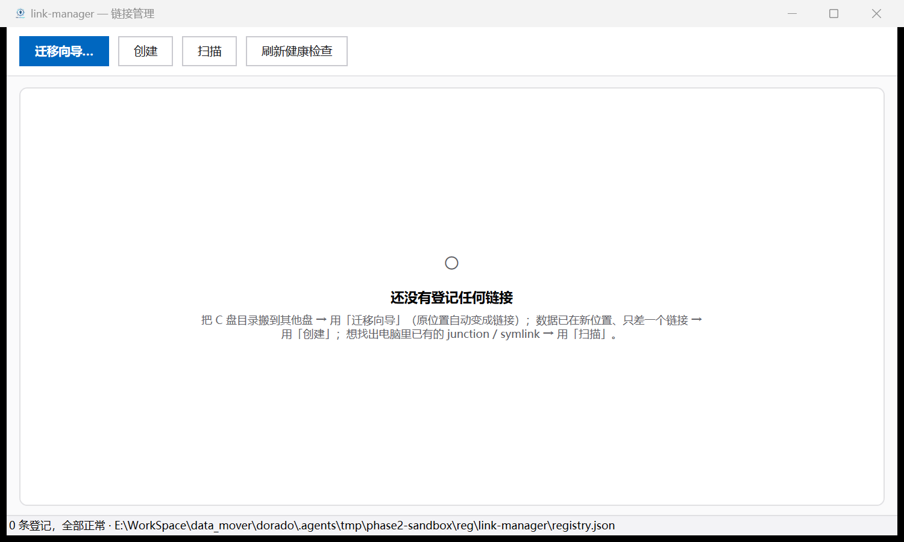
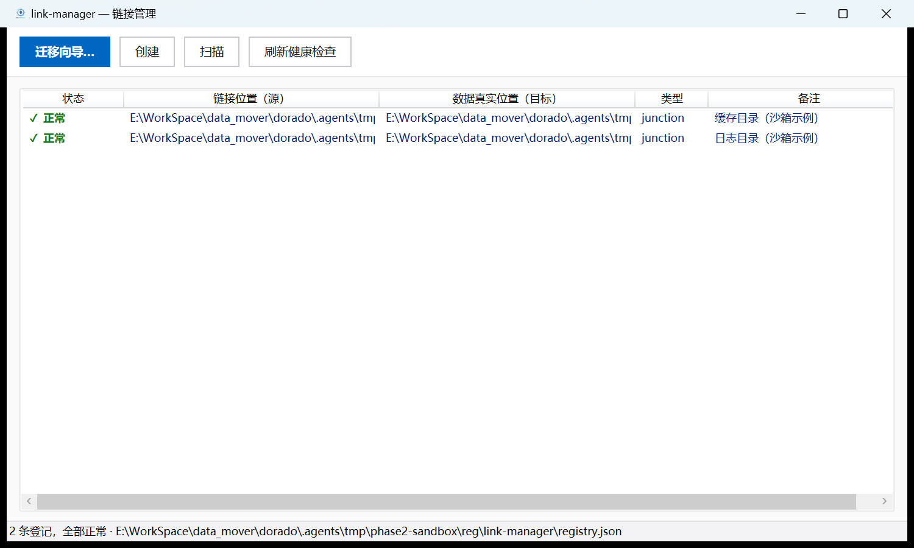
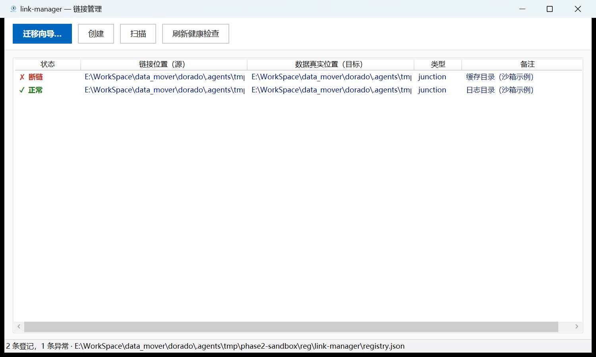
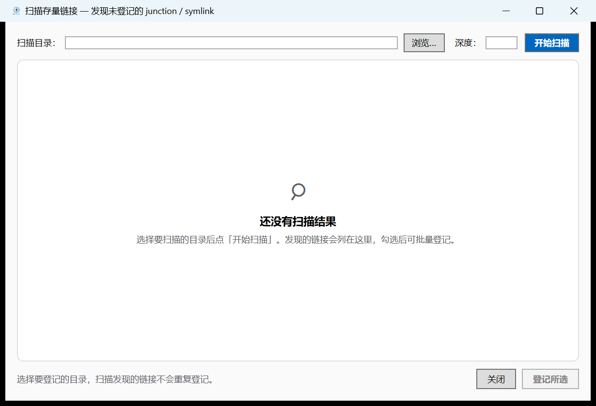
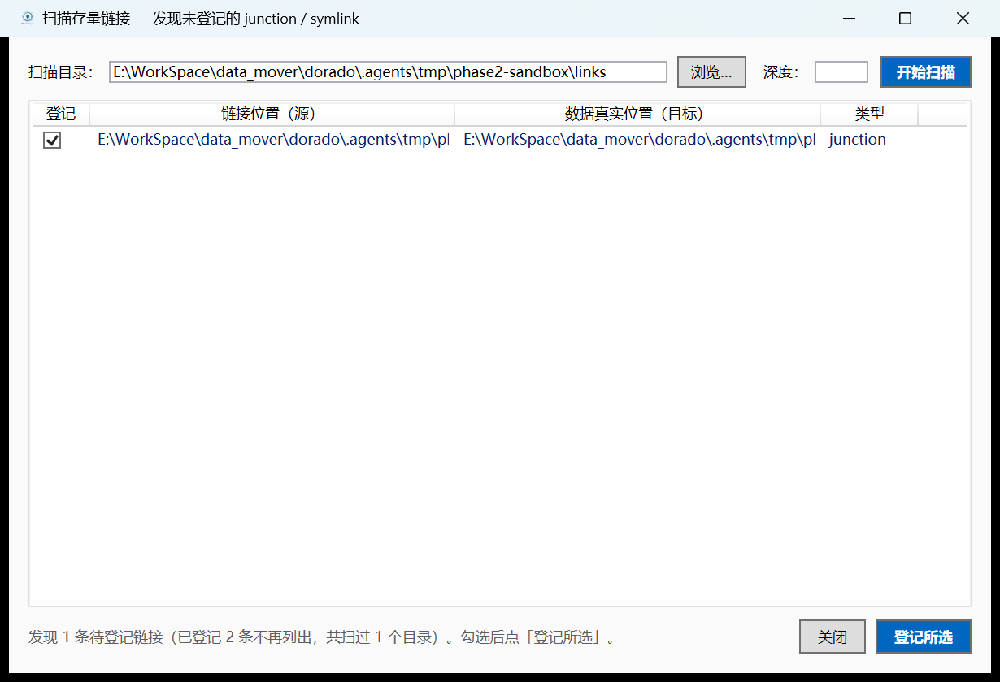
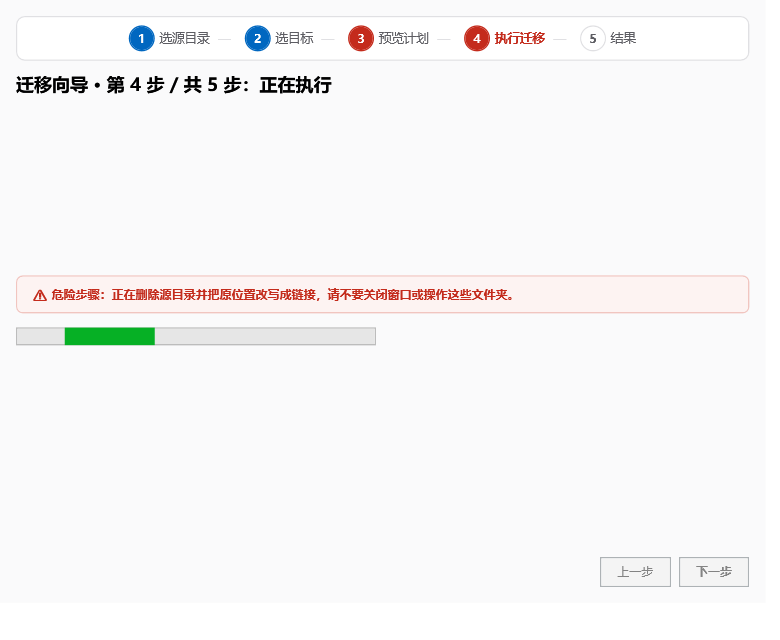
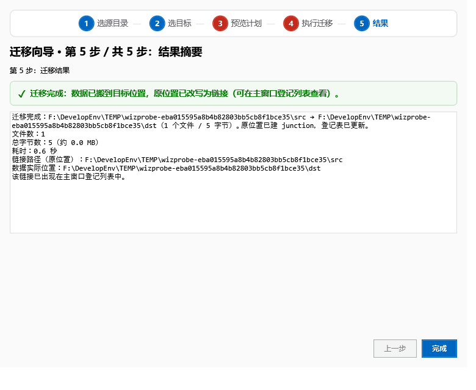
v1.0.6 可测试清单（上一版）
- ✅迁移向导（GUI 5 步）：选源 → 选目标 → 预览 dry-run 计划 → 执行 → 结果；失败自动回滚 — 主路径，搬家用这个
🔶 实测 2026-11-25（本机 scoop 1.0.6）：第 1/2/3 步真跑走通，预览完整呈现 dry-run 计划、护栏阻断原因中文展示、「确认执行」真实禁用；第 4/5 步因本机 magpie/OpenMausBot 运行中被护栏拒绝（按设计，未绕过）——见下方实测报告 - ✅创建 junction（GUI 表单）：数据已在新位置时直接建链接并登记，不搬数据 — 表单上方有分工说明
✅ 实测 2026-11-25：创建+登记真跑通过；发现表单提示与实现语义相反（照提示填必报「源路径不存在」），见实测报告 - ✅健康检查（GUI）："刷新健康检查"，ok / broken / missing / disguised 四态 — 实测 2026-11-25：ok↔broken 往返真跑通过（目标改名即「断链」，改回即「正常」）
- ✅登记列表（GUI）：已登记链接一览 + 备注 — 实测 2026-11-25：条目+备注显示真跑通过
- ✅CLI 全命令：migrate / create / ls / scan / note / remove / config / version / help，支持 --json 与 --registry 沙箱隔离 — 退出码约定见 docs/cli-conventions.md；实测 2026-11-25：除 migrate 执行链路（护栏阻断）外全命令真跑通过，退出码 0/1/2/3/4/64 全部吻合约定；发现 version 打印 1.0.0、note 的 --json 信封 command 字段误为 "create"
- 🔶扫描登记：仅 CLI（
link-manager scan <目录>），GUI 入口暂缓（2026-11-24 拍板）— 实测 2026-11-25：scan --yes 真跑通过，发现并登记 2 条 junction - ⏸GitHub Actions 构建发包优化：已有 tag→测试→打包→Release 流水线，进一步优化计划中
v1.0.7 实测报告（phase2 全量实现收尾）2026-11-26
本机 scoop 安装 1.0.6 真跑 · 测试数据全部落在一次性目录并已清理 · 真实登记表实测前后均为空表（sha256 9e402c89…）
- ✅CLI 全命令（除 migrate 执行）：version / help / config / ls / create / note / remove / scan 全部真跑，全程
--registry沙箱 +--json；退出码 0/1/2/3/4/64 逐个构造复现，全部与 cli-conventions.md 吻合；junction 经 cmddir验证为<JUNCTION>且穿链读文件成功 — 发现：① version 打印 1.0.0（程序集版本未随发版 bump，已知偏差）；②note的 --json 信封command字段误为 "create"（数据本身正确） - 🔶CLI migrate 全链路：dry-run 计划 8 步完整输出；
--execute被护栏拒绝（退出码 2，本机 magpie / OpenMausBot 运行中）——护栏按设计生效，未杀进程绕过；复制→删源→回指→登记链路本次未能走通 - 🔶迁移向导（GUI 5 步）：第 1/2/3 步真跑走通（选源 → 选目标 → 预览）；预览完整显示 dry-run 计划与阻断原因、「确认执行」按钮真实禁用；第 4/5 步因上述护栏阻断未执行 — 截图：wizard-step1-source / wizard-step2-target / wizard-step3-preview-blocked.png
- ✅创建 junction（GUI 表单）：点「创建」即建 junction 并自动登记：状态栏「已创建 junction…（已自动登记）」、列表即现条目、cmd
dir显示<JUNCTION>— 实测发现：表单提示「填入链接处（源）与新位置（目标）」与实现语义相反，照提示填必报「源路径不存在」；正确填法：源=数据真实位置，目标=链接处（见 create-form-hint-order-error.png / create-junction-success.png） - ✅健康检查（GUI）：「刷新健康检查」ok→目标目录改名→「断链」（状态栏「1 条异常」）→改回→「正常」，往返真跑 — 截图：health-ok / health-broken / health-restored-ok.png
- ✅登记列表（GUI）：状态/源/目标/类型/备注五列正常显示条目 — 截图：registry-list-with-entry.png
- ✅扫描登记（仅 CLI）：
scan E:\lm-v106-verify --yes --registry …\sb退出码 0，发现 2 条 junction、importedCount=2登记入沙箱表 - ⏸GitHub Actions 构建发包优化：计划中，本次未变
-
截图（docs/screenshots/v1.0.6/）：
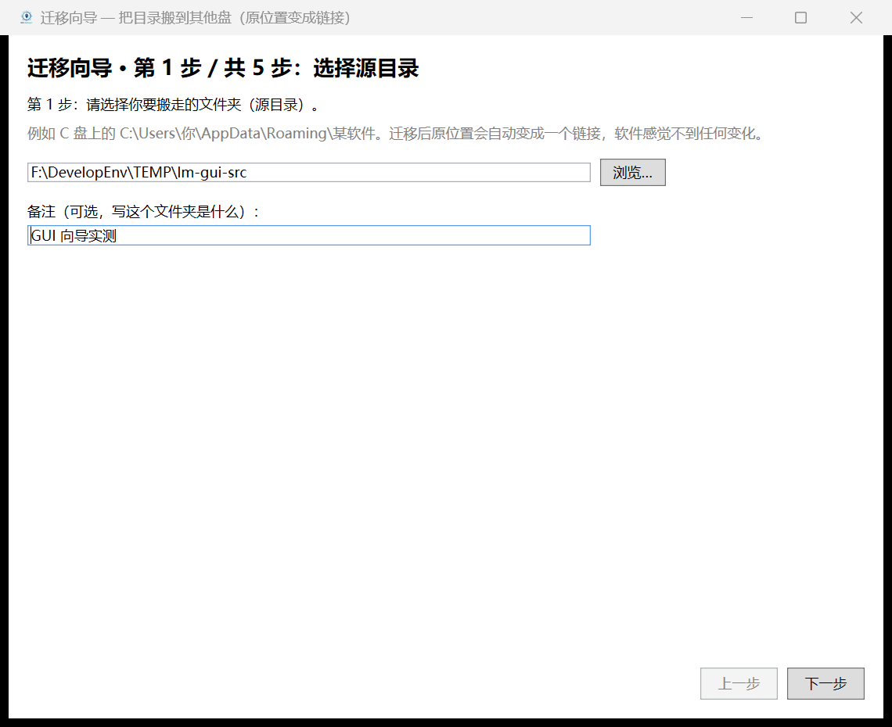
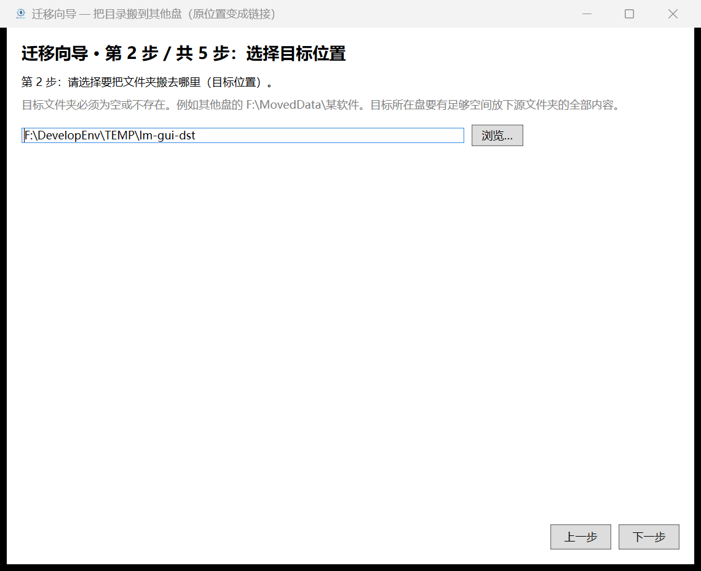
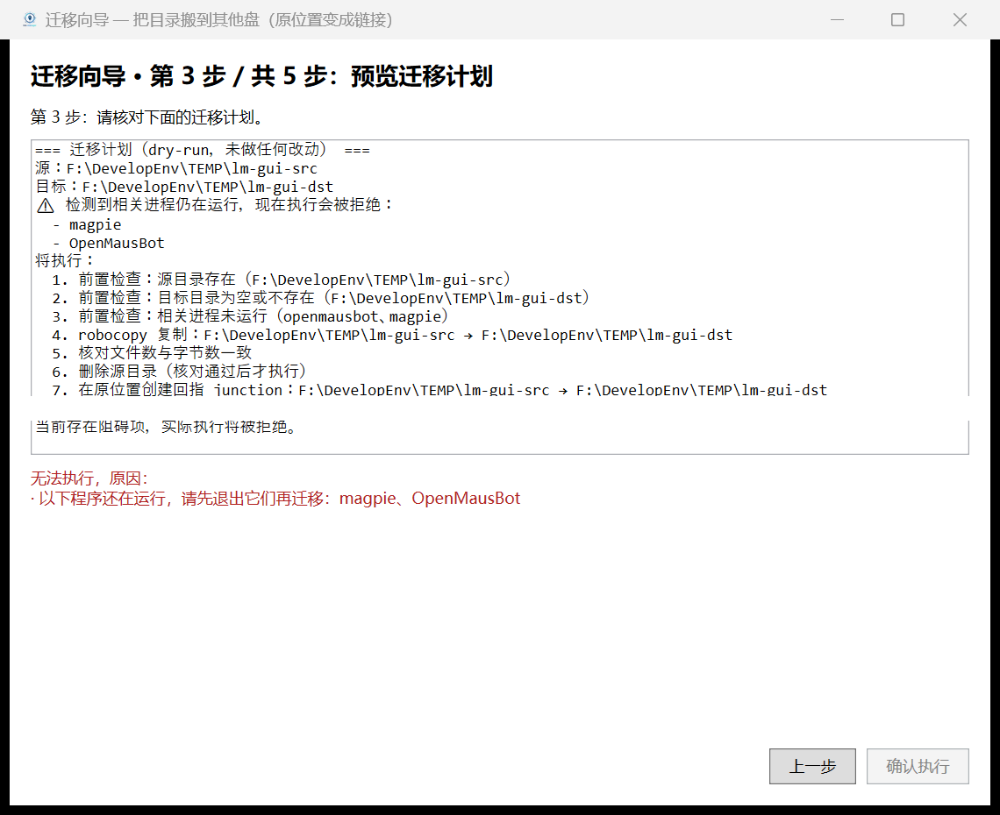
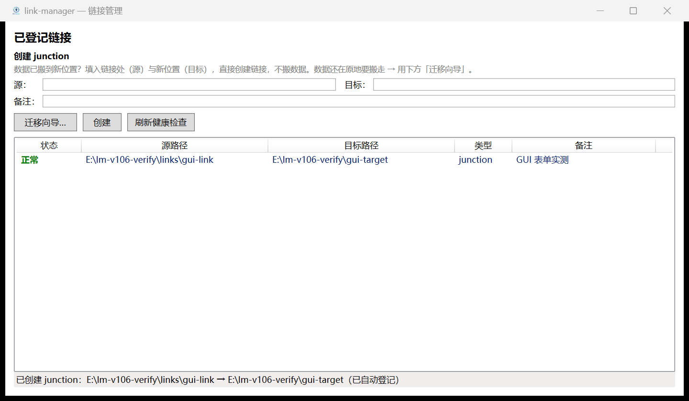
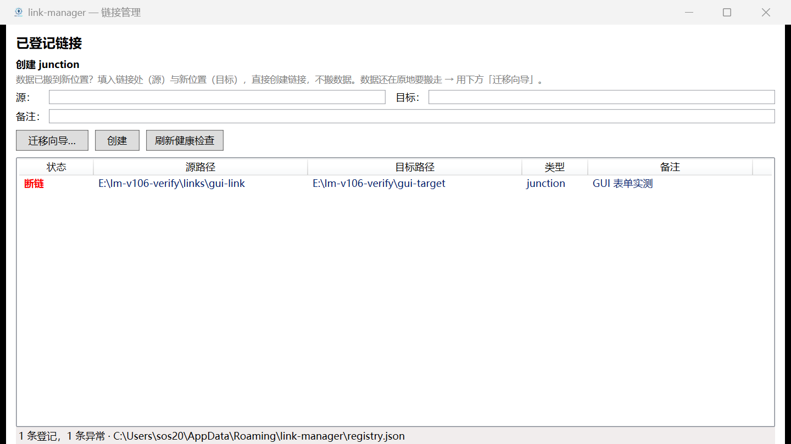
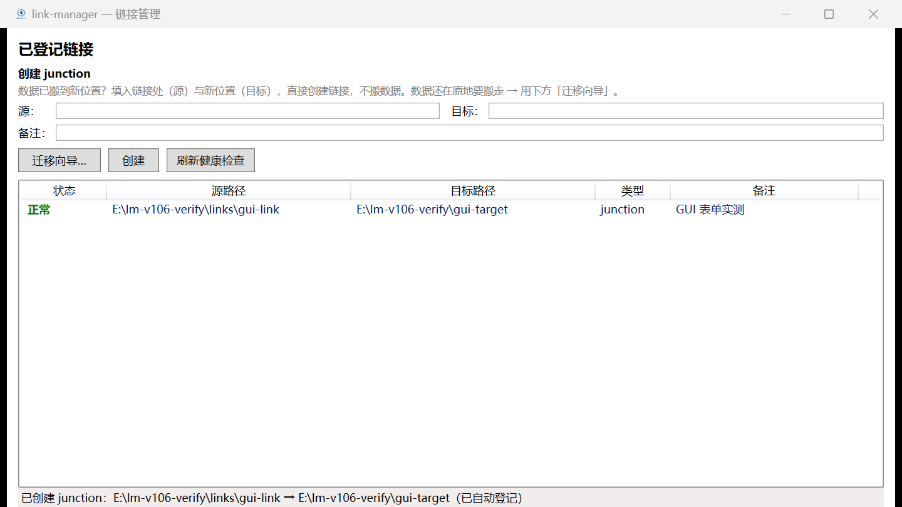
- ✅GUI 主界面分工标注：创建表单加"不搬数据"说明，迁移向导按钮设默认强调 — 解决两入口看似重叠的困惑
- ✅应用图标（三层齐备）：exe 图标 + 窗口标题栏图标（pack URI 嵌入修复）+ 仓库 logo
- ✅exe 应用图标（ApplicationIcon，多尺寸 ico 自项目 logo 生成）— 窗口图标同版发现问题，v1.0.5 修复
- ✅scoop 安装包形态修复：GUI 改 zip 资产（exe + 散文件 DLL），bucket manifest 同步，GUI 可通过 scoop 正常安装
- ✅GUI 首次进发布包；规避 .NET 11 官方 bug dotnet/wpf#11842（IJW 程序集排除出单文件 bundle）
- ✅CI 发布流水线接入 GUI：Release 同时出 CLI exe + GUI 包 — v1.0.0 仅 CLI
- ✅首个公开发布：CLI 单文件 exe（migrate / create / ls / scan / note / remove / config 全命令），172 测试全绿
- ✅仓库转公开（三轮 git 历史隐私清洗后），README 重写 + MIT LICENSE + 项目 logo
- ✅TreasuryGate scoop bucket 接入（autoupdate）